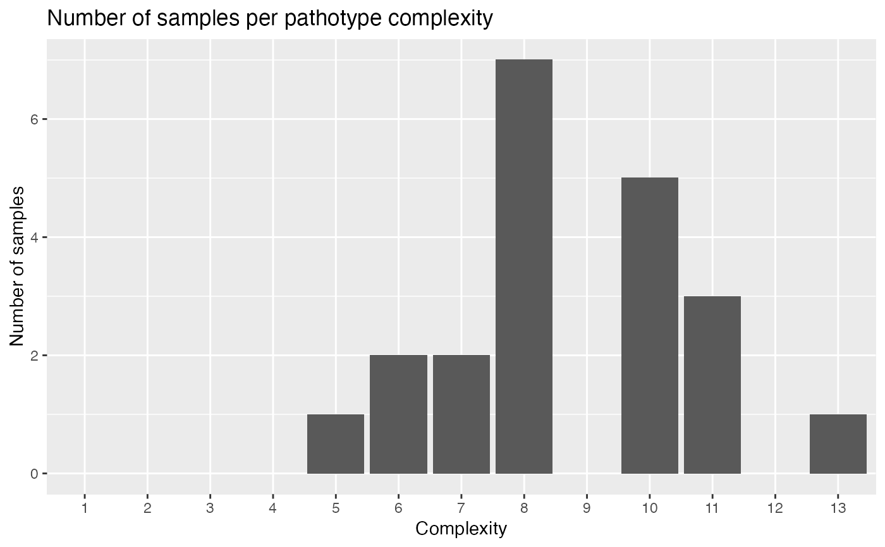

Creates a ggplot2 object of the frequency of complexity
(percent per complexity) or a ggplot2 object of the distribution
(number per complexity) calculated by calculate_complexities().
# S3 method for hagis.complexities autoplot(object, type, color = NULL, order = NULL, ...)
| object | a hagis |
|---|---|
| type | a vector of values for which the bar plot is desired. Specify
whether to return a graph of the frequency of complexities as a percentage,
" |
| color | a named or hexadecimal color value to use for the bar color |
| order | sort the x-axis of the bar chart by ascending or descending
order of |
| ... | passed to the chosen |
A ggplot2 plot
# Using the built-in data set, P_sojae_survey data(P_sojae_survey) # calculate susceptibilities with a 60 % cutoff value complexities <- calculate_complexities(x = P_sojae_survey, cutoff = 60, control = "susceptible", sample = "Isolate", gene = "Rps", perc_susc = "perc.susc") # Visualize the distribution (count or actual values) autoplot(complexities, type = "count")